АЙСЕК · Юлид'26 · гайд для менеджеров
Бот на форуме
Что уже сделано и как с этим работать. По одной мысли на слайд, все кнопки подписаны так же, как в боте.
Регионы: 3 октября
Москва: 30 и 31 октября
Гайд для владельца и менеджеров Юлида. Под каждым слайдом — что говорить. Скриншоты подставляются из папки shots/ рядом с файлом; если файла нет, на его месте серая заглушка.
АЙСЕК · Юлид'26 · гайд для менеджеров
Что уже сделано и как с этим работать. По одной мысли на слайд, все кнопки подписаны так же, как в боте.
Регионы: 3 октября
Москва: 30 и 31 октября
Карта
🎟
У каждого одобренного свой QR. Волонтёр сканирует, делегат отмечен.
🗓
Расписание в чате и в приложении. После сессии бот просит оценку.
🆘
Одна кнопка — и оргам в чат летит карточка. Важные рассылки не глушатся.
🎗
Приглашение ссылкой, шпаргалка, учебные QR, живой экран стоек.
📊
Кто пришёл, где пик, какие сессии полные. Отчёт дня вечером сам.
🚌
Опрос неявившихся, перенос регионов в Москву, «Юлид в цифрах».
Каждая функция включается отдельным тумблером. Выключено — делегат её просто не видит.
Схема
Схема
Права
Админка → «🔧 Управление» → «👥 Роли и доступы»
право «✅ Чек-ин»
Сканер, загрузка файла сканера, учебные QR, «🧳 Нашли вещь». Больше ничего.
право «📋 Модерация заявок»
Почти весь форум: рассылки QR, SOS, статистика, журнал, отчёты, /find.
тяжёлое право
Программа, тексты, чат SOS, роли. Может выдать права кому угодно — даже себе.
Волонтёру давайте только «🎗 Волонтёр форума» и сразу срок «🏁 До конца форума города» — тогда право само пропадёт после форума.
Подготовка
Подготовка
Админка → «📋 Заявки» → «🎪 Форум: функции» → «🚦 Готовность к форуму»
Семь проверок, у каждой кружок: 🟢 всё хорошо, 🟡 стоит глянуть, 🔴 не заработает
Под красной строкой — кнопка, которая ведёт сразу на нужный экран
Открыть накануне и ещё раз утром. После правок — «🔄 Проверить снова»
Что проверяет: Дата форума · Вход по QR · Волонтёры · Программа · Чат SOS · Таблица · Чат делегатов
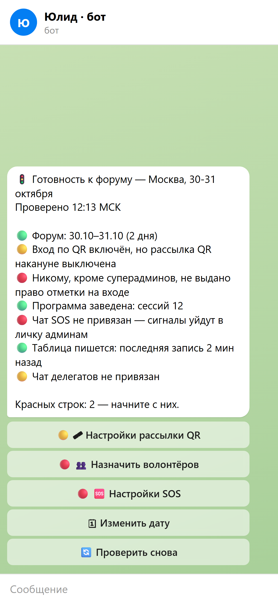
Один экран
Админка → «📋 Заявки» → «🎪 Форум: функции»
Все форумные тумблеры на одном экране: что включено, что нет
Отсюда же — настройки QR, SOS, шпаргалки, отчёта дня, опроса, переноса в Москву
Почти всё по умолчанию выключено. Включаете только то, что нужно этому городу
Настройки у каждого города свои: регионы и Москва не мешают друг другу
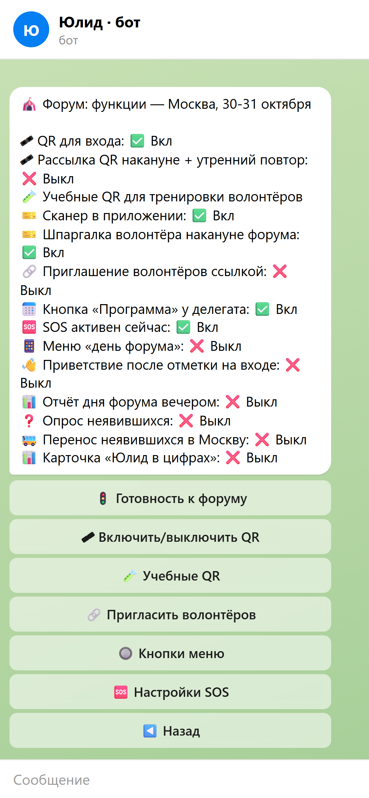
Делегат
QR — это и есть пропуск. На бейдже QR нет
Накануне в 18:00 бот сам присылает картинку QR. Утром в 08:00 — тем, кто не открыл
Кнопка «🎟 Мой QR» в меню — открыть в любой момент
Попросите делегатов открыть QR заранее: открытая картинка видна и без интернета
QR только у одобренных. Внутри случайный код, чужой не угадать
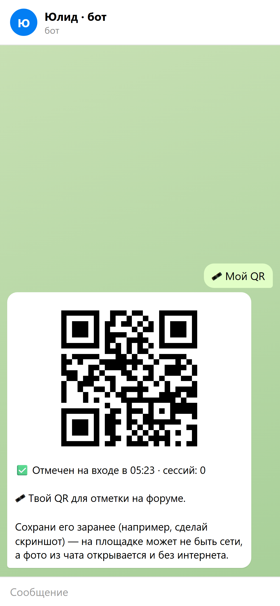
Программа
Делегат жмёт «📅 Программа форума»
В день форума пометки «🔴 Идёт сейчас» и «⏭ Следующая»
Вид — таблица сессий или фото. Кнопка «🔄 Переключить вид»
Заводит программу менеджер: «🎪 Событие» → «🗓 Программа форума»
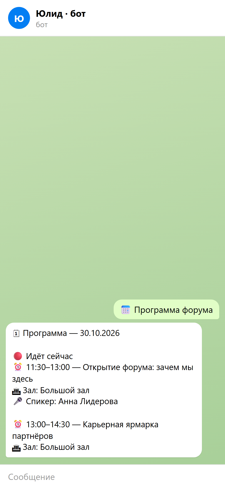
В чате
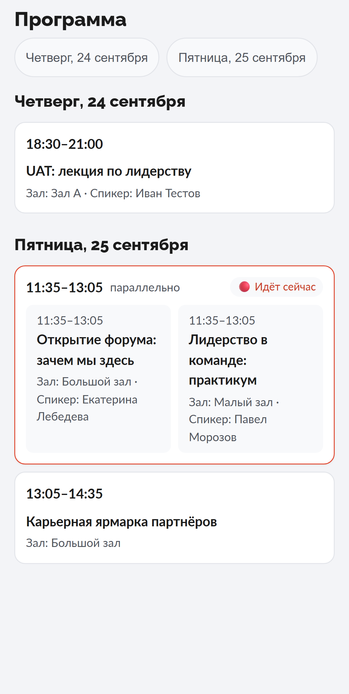
Приложение: таблица
Сканер в приложении
Волонтёр открывает приложение → сканер
Точка: «🚪 Вход» всегда первая, дальше «🧪 Тренировка» и сессии
Сканер не закрывается между сканами — сканируйте подряд
Ошибся — «↩️ Отменить», 10 секунд на плашке
QR не читается — поиск по фамилии, рядом город и @юзернейм
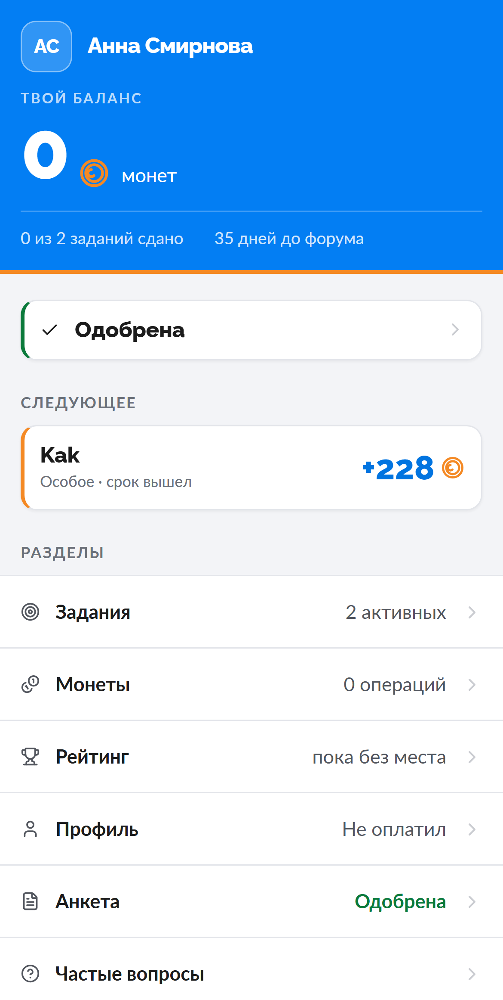
Главный экран
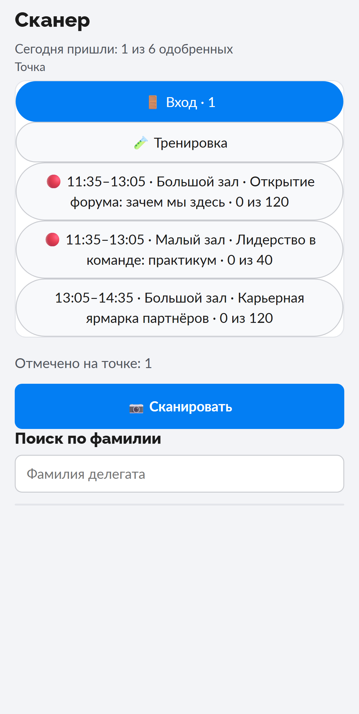
Выбор точки
Сканер в приложении
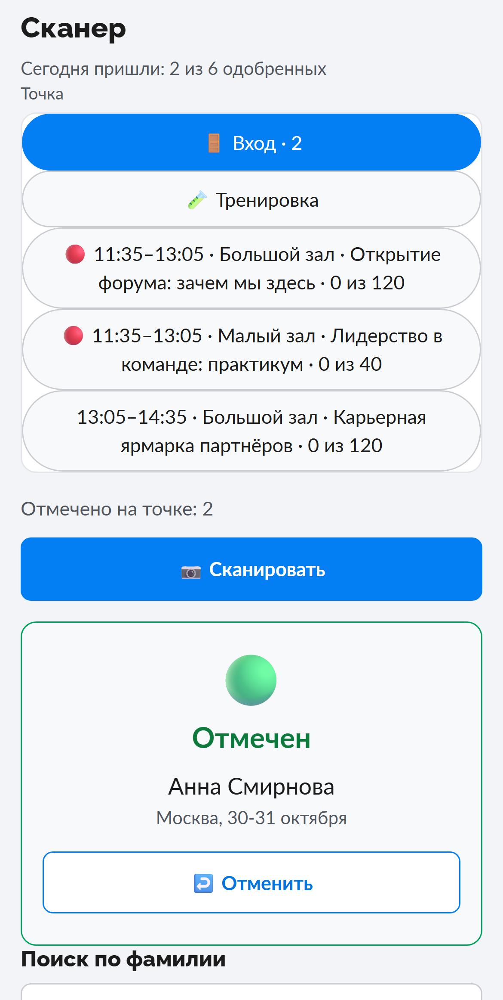
✅ Отмечен
Пропускайте и сканируйте следующего
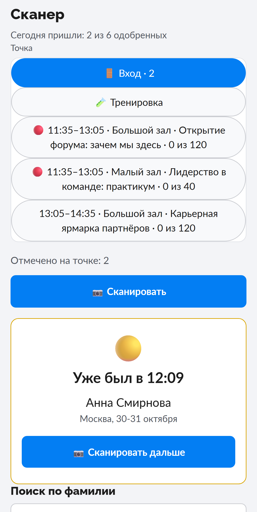
🟡 Уже был в ЧЧ:ММ
Пропускайте, если QR показывает он сам
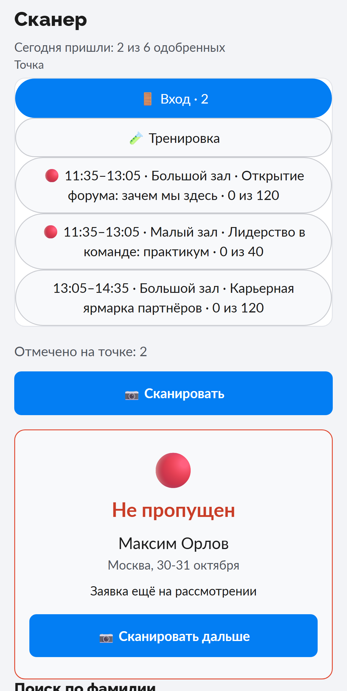
🔴 Не одобрен · прошлый сезон · чужой QR
Не пускать — на стойку проблемных
Сканер в приложении
Сканер сам замечает, что связь плохая
Три скана подряд дольше 5 секунд — сверху жёлтая полоса
«Сеть медленная. Переключитесь на приложение-сканер.»
Кнопка «Как переключиться» — открывает шпаргалку
Полоса пропадёт сама, когда сеть снова быстрая
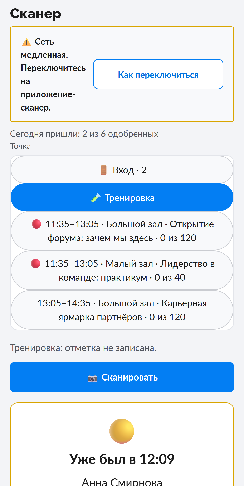
Волонтёры
«✅ Отметки на форуме» → «🧪 Учебные QR»
Бот присылает лист с пятью учебными QR — все случаи плашек
В сканере выбрать точку «🧪 Тренировка» и отсканировать все пять
Ничего не записывается: «Тренировка: отметка не записана.»
«🧪 Проверить приложение-сканер» — проверка запасного приложения, тоже без записи
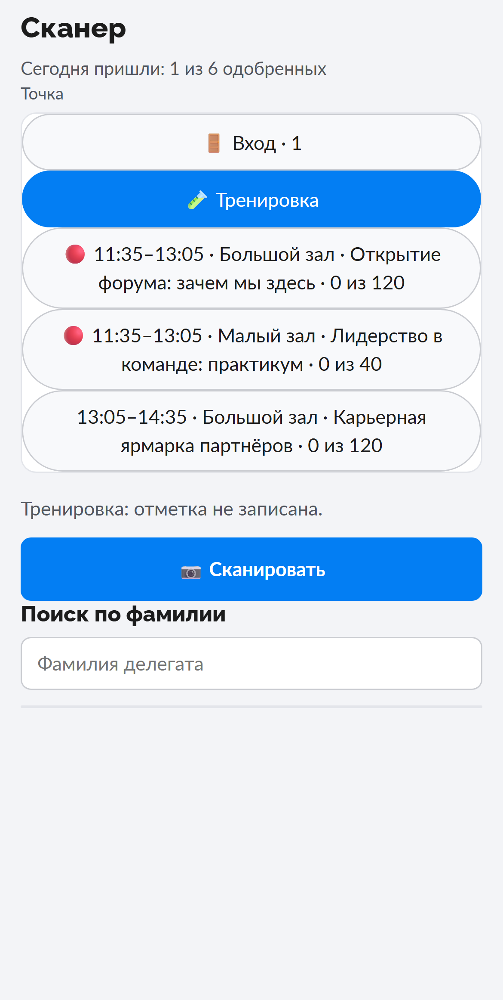
Волонтёры
«🎪 Форум: функции» → «🔗 Пригласить волонтёров»
Сначала тумблер «Приглашения: ✅ Вкл»
Три шага кнопками: срок ссылки → срок прав → лимит переходов
Волонтёр жмёт ссылку — и сразу получает сканер своего города
«⛔ Отозвать» останавливает ссылку, но права не снимает — их снимают в «👥 N вошли»
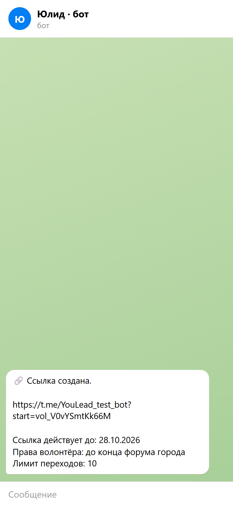
День форума
«✅ Отметки на форуме» → «📍 Сейчас на площадке»
Сколько пришли и сколько за последние 15 минут
Какие сессии идут прямо сейчас и насколько полны залы
Стойки: сколько сканов у каждого волонтёра
⏸ «стойка не сканирует дольше N мин» — пора проверить, что там
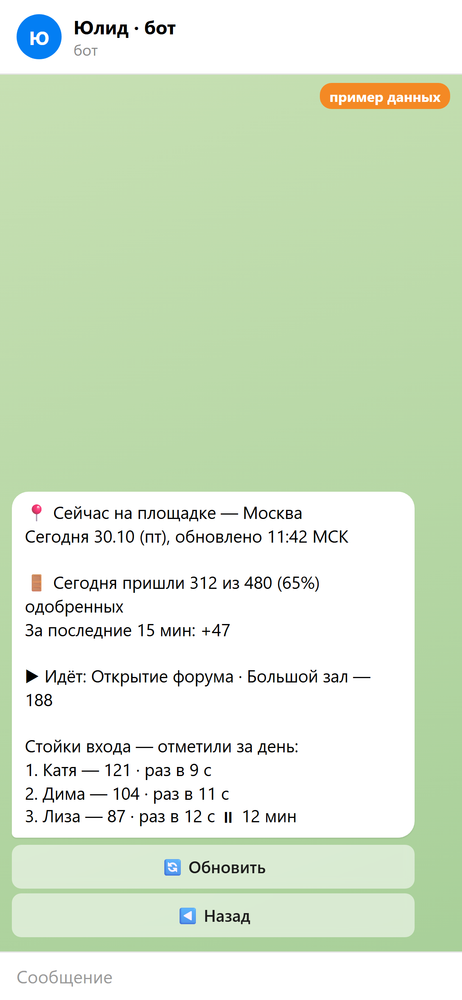
День форума
«✅ Отметки на форуме» → «📊 Статистика прихода»
Пришли N из M по городу и итогом
По дням и по сессиям, заполненность залов
«📥 Выгрузить CSV» — всё одним файлом
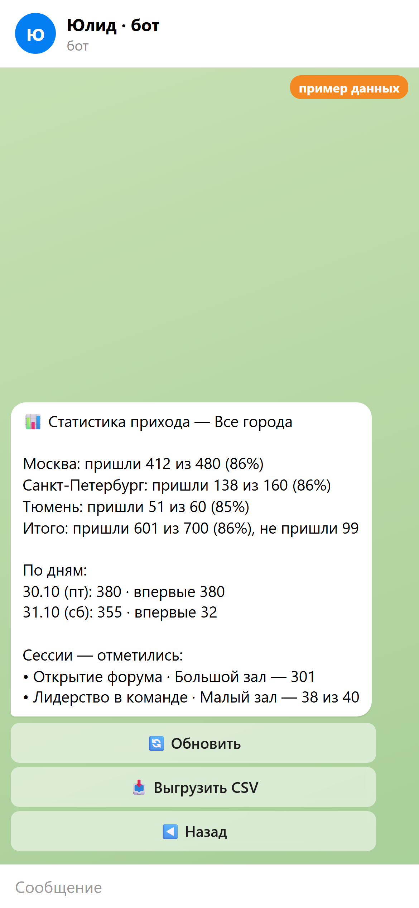
В боте
Дашборд
1
yl26.alekseev.info (стенд — test.alekseev.info)
2
Нужно право «📊 Статистика» в «👥 Роли и доступы»
3
Ссылка на главной дашборда
Приход по дням, часам и городам + стойки
Сессии: заполненность и оценки
После форума: опрос, перенос в Москву, «Юлид в цифрах»
SOS: сколько, сколько решено, за сколько взяли
Письма с решением: доставлено / не доставлено
Только общие цифры — без имён и текстов. Менеджер с привязкой к городу видит только свой город. Выгрузка в файл — в боте, кнопка «📥 Выгрузить CSV».
Исправление ошибок
«✅ Отметки на форуме» → «📓 Журнал площадки»
Кто сканировал, кто отменял, кто грузил файлы — всё записано
«👤 Фильтр по волонтёру» — действия одного человека
«🗑 Снять отметку делегату»: фамилия → отметка → подтверждение
Бот заранее пишет, что изменится. Запись о снятии остаётся в журнале
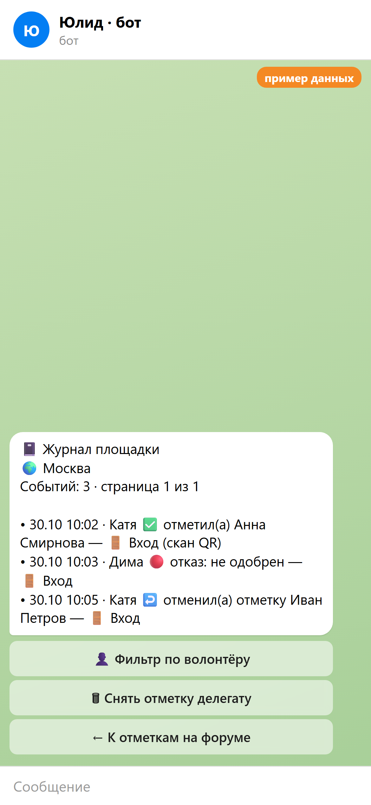
SOS
Категорий нет — скорость важнее
Делегат может дописать текст, фото или геопозицию — всё в ту же карточку
Ответ реплаем на карточку уходит делегату
Никто не взял за 5 минут — сигнал в чат и лично менеджерам
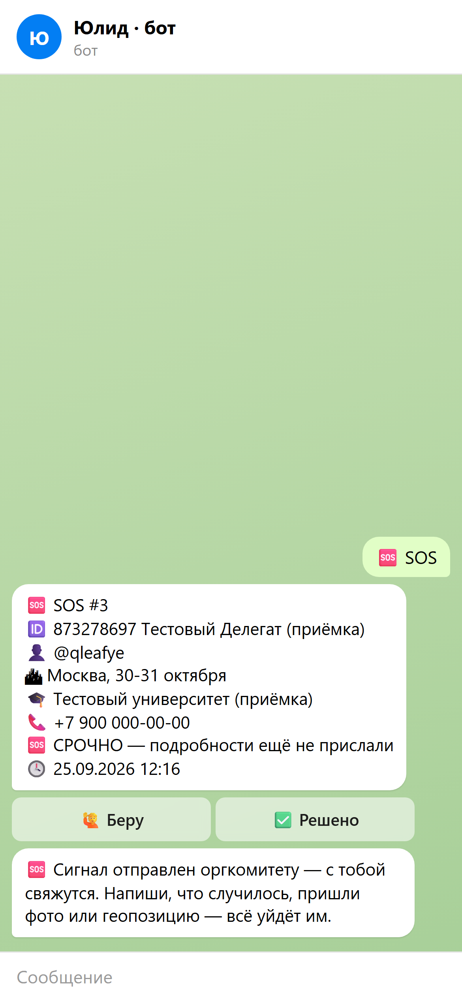
Рассылки
Менеджер
Тумблер на экране подтверждения любой рассылки.
Сверху сообщения — «❗ Важно».
Доходит всем, даже тем, кто нажал «🔕».
Делегат
Кнопка под обычной рассылкой, весь сезон.
Обычные рассылки молчат до конца дня.
Передумал — «🔔 Присылать всё».
Не ставьте «❗ Важное» на рутину. Иначе делегаты привыкнут и пропустят то, что действительно важно.
День форума
«✅ Отметки на форуме» → «📨 Написать не пришедшим»
Бот покажет, скольким уйдёт, и спросит «Отправить?»
Сначала загрузите все файлы сканера. Иначе «мы тебя не видим» получит тот, кто уже пришёл.
Вечер
«🎪 Форум: функции» → «📊 Настройки отчёта дня форума»
Каждый вечер дня форума, по умолчанию в 21:00
В чат оргов города и лично менеджерам
«📊 Отчёт дня сейчас» — собрать прямо сейчас
«📥 Выгрузить отметки (CSV)» — все отметки дня файлом
📊 Отчёт дня форума
Пришли 412 из 480 одобренных
Пик прихода: 09:00–09:59
Топ-3 и антитоп-3 сессий
Ответы «не пришёл»
SOS: решено, время до «Беру»
Числа для примера
После форума
«🎪 Форум: функции» → «❓ Настройки опроса неявившихся»
Мы не видели тебя на форуме. Расскажешь, что помешало прийти?
Передумал(а)
Не смог(ла) по учёбе/работе
Далеко ехать
Забыл(а)
Другое
На следующий день после форума, в 12:00
Только одобренным без отметки входа
Регионам с офлайн-сканером — сначала загрузить файлы
После форума
«🎪 Форум: функции» → «🚌 Настройки переноса в Москву»
Кто ответил «Передумал(а)» или «Не смог(ла) по учёбе/работе»
Кнопкой: «Сохранить одобрение» или «Вернуть на модерацию»
Раз в 30 минут сводка: сколько перенеслось и откуда
После форума
«🎪 Форум: функции» → «📊 Настройки карточки «Юлид в цифрах»»
Личная картинка: дни на форуме, сессии, любимый зал, монеты
«👁 Превью себе» — посмотреть до рассылки
Кому: «пришедшим хотя бы раз» или «всем одобренным»
Сама не уходит — только по кнопке менеджера
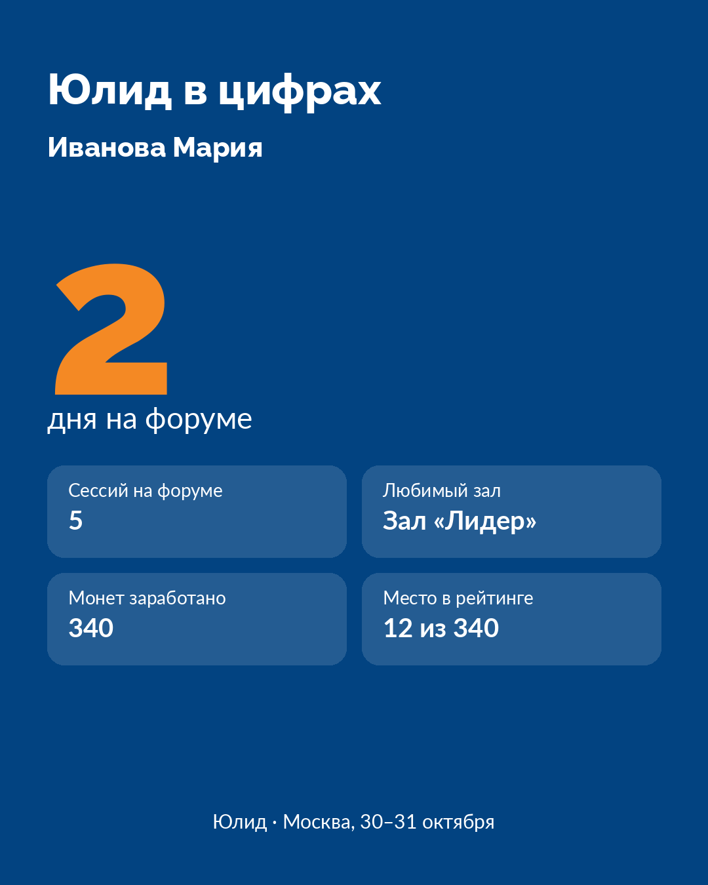
Один делегат
Напишите боту /find @username — откроется карточка с кнопками
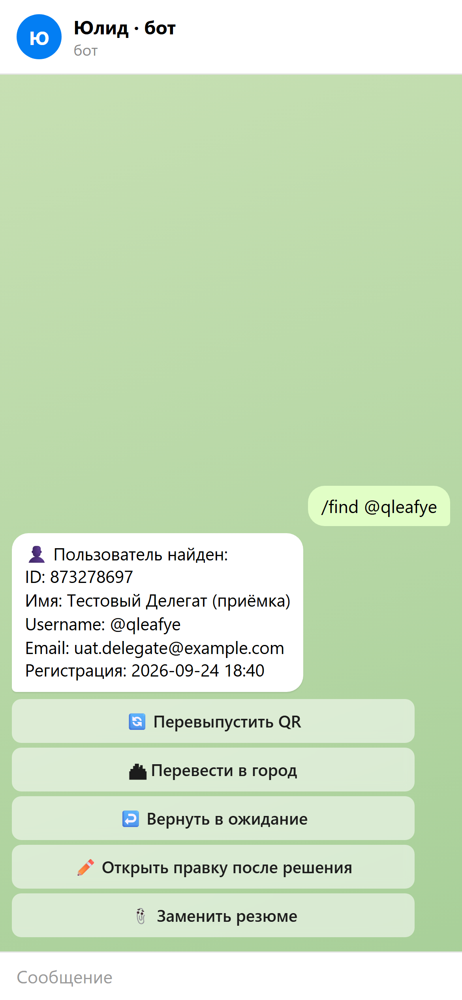
Таблица
Админка → «📊 Данные» → «🔍 Сверить с БД»
Ищет расхождения между ботом и Google-таблицей. Сама ничего не меняет
«➕ Дописать недостающие строки», «🔄 Выправить статусы»
«📨 Переотправить решения» — кому не дошло одобрение или отказ
«📥 Полный список (CSV)» — всегда
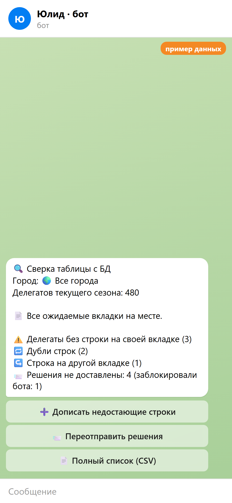
Если что-то пошло не так
Проверить приложение кнопкой «🧪 Проверить приложение-сканер»: читает ли оно время скана
пропускаем: QR есть только у одобренных
Пропустить, записать от руки фамилию, город, @юзернейм. Потом отметить через поиск
Если что-то пошло не так
| Случилось | Что делать |
|---|---|
| Делегата нет в базе или не одобрен | Красная плашка. Отправить на стойку проблемных, там решают |
| Отсканировали не того | «↩️ Отменить» за 10 секунд или «🗑 Снять отметку делегату» в журнале |
| SOS не доходит до оргов | Проверить «🚦 Готовность к форуму», строка «Чат SOS». Бот должен быть в чате |
| Таблица отстаёт от бота | «🔍 Сверить с БД» → «➕ Дописать недостающие строки» |
| Не может открыть QR | Одобрен ли? Включён ли вход по QR? Если да — «🔄 Перевыпустить QR» в /find |
| Файл загрузили, отметок нет | Волонтёр привязан к другому городу — загрузить от своего волонтёра |
Вопросы к DXP · до 28.09
| Вопрос | Варианты / что нужно |
|---|---|
| 1. Кого пускаем без регистрации? | а) не пускаем · б) на стойку проблемных, решает старший · в) пускаем всех, отмечаем потом. Кто решает на месте? |
| 2. Сколько сессий идёт параллельно? | По СПб, Тюмени, Москве. На каждый зал в слоте — волонтёр со сканером |
| 3. На сессиях — дверь или обход? | Сканируем на входе в зал или ходим по рядам |
| 4. Волонтёры по ссылке | Кто создаёт ссылку, на какой срок, сколько человек на ссылку |
| 5. Чат SOS в каждом городе | Какая группа, кто дежурит и отвечает. Бота — админом в группу |
| 6. Интернет на стойках | Есть ли Wi-Fi / мобильная сеть на входе; кто прогоняет приложение-сканер офлайн до 01.10 |
Вопросы к DXP · до 10.10
| Вопрос | Варианты / что нужно |
|---|---|
| 7. Партнёры, спикеры, волонтёры на входе | а) список → гостевой QR с типом · б) через стойку проблемных без QR |
| 8. Монеты за посещение | Даём ли, сколько, автоматически или заданием |
| 9. Зачем отмечаем сессии | Только отзывы и статистика · + сертификат (X% сессий) · + монеты |
| 10. Опрос после форума | Общий или свой на форум; отдельный для вечеринки; анонимный или нет |
| 11. Регионы → Москва | Предлагаем? Остаются одобренными или на модерацию; есть ли квота мест и доплата; кто в Москве получает сводку |
| 12. Баллы за чат | «+5 ответом в чате» · конкурсы заданиями · авто для самых активных · из таблички; показывать баланс сразу или до форума |
| 13. «Юлид в цифрах» | Фон карточки (фото/бренд), кому рассылаем: пришедшим хотя бы раз или всем одобренным |
| 14. Тестовый прогон с ОК | 2–3 человека на 30–40 минут до 01.10 — кто и когда |
| 15. Мелочи карточки и прав | Английская карточка — «Юлид» кириллицей ок? · Названия сезонов для строки «С нами с» · Фон один или по городам · «📨 Переотправить решения» — только с правом настроек или и модераторам заявок |
ТЗ дизайнеру · 1 из 2
| Что | Требования | Срок |
|---|---|---|
| 1. Фон «Твой Юлид в цифрах» | 1080×1350, PNG/JPG, один на все города, без текста. Верх ~250 px и низ ~200 px — спокойные (заголовок, имя, футер). Середина — без мелкого рисунка: там крупная оранжевая цифра и плашки. Бот сам затемняет фото | до 01.10 |
| 2. Логотип | Квадрат от 512×512, PNG с прозрачностью, читается на синем. Идёт в приложение и в футер карточки | до 01.10 |
| 3. Фото программы — по городу | СПб, Тюмень, Москва. Вертикально 1080×1350 или 1080×1920. Крупный текст — читается с телефона без увеличения: даты, залы, время | до 01.10 |
Бренд: синий #037EF3, оранжевый #F48924, шрифты как в этой презентации. «Юлид» и «АЙСЕК» — только кириллицей.
ТЗ дизайнеру · 2 из 2
| Что | Требования | Срок |
|---|---|---|
| 4. Таблички с QR программы | A4/A3 на навигацию (не на бейдж). QR от 8 см, подпись «Программа форума в боте». Рядом — никаких других QR, чтобы волонтёры не сканировали не тот | до 01.10 |
| 5. Учебный лист для волонтёров | Макет A4 под 5 учебных кодов с подписями: 🟢 одобрен · 🟡 уже был · 🔴 не одобрен · 🔴 прошлый сезон · 🔴 чужое событие. Сами коды генерирует бот | до инструктажа |
| 6. Рамка личного QR (по желанию) | Макет 1080×1080: место под QR от 700 px и поле под имя. Сейчас бот шлёт голый QR с подписью | по желанию |
Бренд: синий #037EF3, оранжевый #F48924, шрифты как в этой презентации. «Юлид» и «АЙСЕК» — только кириллицей.
Шпаргалка
Всё начинается с команды /admin → «👮♂️ Панель администратора»
📋 Заявки
«✅ Отметки на форуме», «🎪 Форум: функции», «🆘 SOS», «🧳 Нашли вещь», тумблер «🎟 QR для чек-ина на форуме»
🎪 Событие
«🗓 Программа форума», дата форума, «🔘 Кнопки меню»
📊 Данные
«🔍 Сверить с БД», «📨 Переотправить решения»
🔧 Управление
«👥 Роли и доступы», «🔗 Пригласить волонтёров»
📢 Рассылки
«❗ Отметить как важное», фильтры «Были на сессии …»
/find @username
карточка одного делегата
Для печати: Ctrl+P — каждый слайд на отдельной странице 1920×1080, без пояснений.